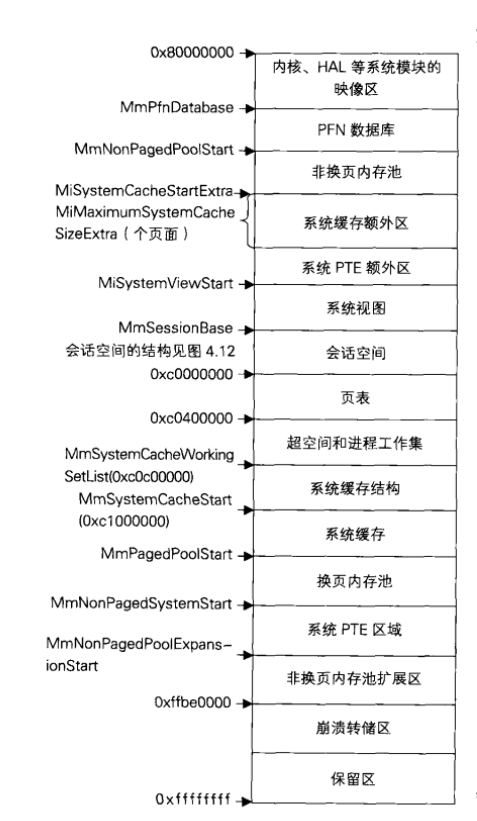

# 楔子
Windows 的内存管理是非常复杂的，目前仅学习其线性地址、私有内存、映射内存、物理内存是如何管理的。
# 线性地址的管理
进程空间地址的划分：
| 分区 | x86 32 位 Windows |
|---|---|
| 空指针赋值区 | 0x00000000 - 0x0000FFFF |
| 用户模式区 | 0x00010000 - 0x7FFEFFFF |
| 64KB 禁入区 | 0x7FFF0000 - 0x7FFFFFFF |
| 内核 | 0x80000000 - 0xFFFFFFFF |
进程虽然名义上有 4G 的虚拟内存空间，但只有低 2G 才是属于自己的，高 2G 是共享的内核空间。
学过之前的知识，上面那些不能访问的地址，只要挂上一个物理页，我们也是可以访问的。
但是在应用层我们必须得知道哪些地址可以访问哪些地址不能访问，以及哪些地址已经申请了线性地址，所以这就需要记录了。
记录哪些线性地址分配了，那些线性地址没有分配，无论是内核空间还是用户空间都需要记录。
下图是 Windows 20003 SP1 的内核空间内存结构图：

详细的内容在《Windows 内核原理与实现》一书中有。
下面学习用户空间是如何记录的。
当你在一个进程空间中申请内存的时候，系统会查哪一个线性地址没有被占用。
那么 Windows 是查询什么呢？学过数据结构的都知道，树的查询效率是要比链表高的，所以 Windows 在用户空间设计了一个二叉树，这上面记录着进程中线性地址的使用情况。
而这个二叉树结构在进程结构体 EPROCESS 上:
EPROCESS | |
... | |
+0x11c VadRoot | |
... |
结构体说明：
kd> dt _MMVAD | |
nt!_MMVAD | |
+0x000 StartingVpn : Uint4B // 线性地址开始位置 (页为单位) | |
+0x004 EndingVpn : Uint4B // 线性地址结束位置 (页为单位) | |
+0x008 Parent : Ptr32 _MMVAD // 父节点 | |
+0x00c LeftChild : Ptr32 _MMVAD // 左子树 | |
+0x010 RightChild : Ptr32 _MMVAD // 右子树 | |
+0x014 u : __unnamed | |
+0x018 ControlArea : Ptr32 _CONTROL_AREA | |
+0x01c FirstPrototypePte : Ptr32 _MMPTE | |
+0x020 LastContiguousPte : Ptr32 _MMPTE | |
+0x024 u2 : __unnamed |
Windows XP 的源码中的定义为：
typedef struct _MMVAD { | |
ULONG_PTR StartingVpn; | |
ULONG_PTR EndingVpn; | |
struct _MMVAD *Parent; | |
struct _MMVAD *LeftChild; | |
struct _MMVAD *RightChild; | |
union { | |
ULONG_PTR LongFlags; | |
MMVAD_FLAGS VadFlags; | |
} u; | |
PCONTROL_AREA ControlArea; | |
PMMPTE FirstPrototypePte; | |
PMMPTE LastContiguousPte; | |
union { | |
ULONG LongFlags2; | |
MMVAD_FLAGS2 VadFlags2; | |
} u2; | |
} MMVAD, *PMMVAD; |
# 实验验证
在虚拟机中我打开了 DbgView.exe 进程，接下来查看其 EPROCESS 结构体，看看其 +0x11c 的位置:
kd> !process 0 0 | |
**** NT ACTIVE PROCESS DUMP **** | |
…… | |
…… | |
Failed to get VadRoot | |
PROCESS 89e21830 SessionId: 0 Cid: 0758 Peb: 7ffdd000 ParentCid: 043c | |
DirBase: 0aac01a0 ObjectTable: e3365a28 HandleCount: 56. | |
Image: Dbgview.exe | |
kd> dt _EPROCESS 89e21830 | |
nt!_EPROCESS | |
…… | |
…… | |
+0x11c VadRoot : 0x8a173990 Void | |
+0x120 VadHint : 0x89d23eb0 Void | |
+0x124 CloneRoot : (null) | |
+0x128 NumberOfPrivatePages : 0xbb |
查看 VadRoot 的结构：
kd> dt _MMVAD 0x8a173990 | |
nt!_MMVAD | |
+0x000 StartingVpn : 0x9e0 | |
+0x004 EndingVpn : 0xadf | |
+0x008 Parent : (null) | |
+0x00c LeftChild : 0x89dac868 _MMVAD | |
+0x010 RightChild : 0x89d23eb0 _MMVAD | |
+0x014 u : __unnamed | |
+0x018 ControlArea : 0x0a080004 _CONTROL_AREA | |
+0x01c FirstPrototypePte : 0x7266744e _MMPTE | |
+0x020 LastContiguousPte : 0x89cf0f28 _MMPTE | |
+0x024 u2 : __unnamed |
我们遍历其右分支：
kd> dt 0x89d23eb0 _MMVAD | |
nt!_MMVAD | |
+0x000 StartingVpn : 0x7c800 | |
+0x004 EndingVpn : 0x7c91d | |
+0x008 Parent : 0x8a173990 _MMVAD | |
+0x00c LeftChild : 0x89d12ae8 _MMVAD | |
+0x010 RightChild : 0x8a164b48 _MMVAD | |
+0x014 u : __unnamed | |
+0x018 ControlArea : 0x8a076430 _CONTROL_AREA | |
+0x01c FirstPrototypePte : 0xe158d6e0 _MMPTE | |
+0x020 LastContiguousPte : 0xfffffffc _MMPTE | |
+0x024 u2 : __unnamed |
我们可以看到从 0x7c800 到 0x7c91d (以页为单位) 都是被占用的，那么我们如何查看是被谁占用的呢？
# 查看是谁占用的内存
注意 MMVAD 中的 +0x018 ControlArea : 0x8a076430 _CONTROL_AREA
我们在 Windbg 中查看：
kd> dt _CONTROL_AREA 0x8a076430 | |
nt!_CONTROL_AREA | |
+0x000 Segment : 0xe158d6a0 _SEGMENT | |
+0x004 DereferenceList : _LIST_ENTRY [ 0x0 - 0x0 ] | |
+0x00c NumberOfSectionReferences : 1 | |
+0x010 NumberOfPfnReferences : 0xa6 | |
+0x014 NumberOfMappedViews : 0x15 | |
+0x018 NumberOfSubsections : 5 | |
+0x01a FlushInProgressCount : 0 | |
+0x01c NumberOfUserReferences : 0x16 | |
+0x020 u : __unnamed | |
+0x024 FilePointer : 0x8a0763b8 _FILE_OBJECT | |
+0x028 WaitingForDeletion : (null) | |
+0x02c ModifiedWriteCount : 0 | |
+0x02e NumberOfSystemCacheViews : 0 |
观察到其 +0x024 FilePointer : 0x8a0763b8 _FILE_OBJECT
接着查看：
kd> dt _FILE_OBJECT 0x8a0763b8 | |
nt!_FILE_OBJECT | |
+0x000 Type : 0n5 | |
+0x002 Size : 0n112 | |
+0x004 DeviceObject : 0x89d68030 _DEVICE_OBJECT | |
+0x008 Vpb : 0x8a0cb298 _VPB | |
+0x00c FsContext : 0xe15415c8 Void | |
+0x010 FsContext2 : 0xe1541720 Void | |
+0x014 SectionObjectPointer : 0x8a076314 _SECTION_OBJECT_POINTERS | |
+0x018 PrivateCacheMap : (null) | |
+0x01c FinalStatus : 0n0 | |
+0x020 RelatedFileObject : 0x8a198770 _FILE_OBJECT | |
+0x024 LockOperation : 0 '' | |
+0x025 DeletePending : 0 '' | |
+0x026 ReadAccess : 0x1 '' | |
+0x027 WriteAccess : 0 '' | |
+0x028 DeleteAccess : 0 '' | |
+0x029 SharedRead : 0x1 '' | |
+0x02a SharedWrite : 0 '' | |
+0x02b SharedDelete : 0x1 '' | |
+0x02c Flags : 0x44042 | |
+0x030 FileName : _UNICODE_STRING "\WINDOWS\system32\kernel32.dll" | |
+0x038 CurrentByteOffset : _LARGE_INTEGER 0x0 | |
+0x040 Waiters : 0 | |
+0x044 Busy : 0 | |
+0x048 LastLock : (null) | |
+0x04c Lock : _KEVENT | |
+0x05c Event : _KEVENT | |
+0x06c CompletionContext : (null) |
可以发现是 +0x030 FileName : _UNICODE_STRING "\WINDOWS\system32\kernel32.dll" 。
如果 _CONTROL_AREA 指向的地址是空的，那么线性地址被真正的物理页占用着。
既所有的内存都可以分为两类，一类是 VirtualAllocate 申请的私有内存，一类是映射的内存。
# 遍历进程的内存结构
这个时候我们已经可以遍历进程的整个内存结构了，但是一个一个手动遍历非常麻烦，所以 Windows 提供了 !vad 命令：
kd> !vad 0x8a173990 | |
VAD Level Start End Commit | |
8a180608 3 10 10 1 Private READWRITE | |
8a03c0a8 4 20 20 1 Private READWRITE | |
89cf1438 2 30 12f 6 Private READWRITE | |
8a15c740 4 130 132 0 Mapped READONLY Pagefile section, shared commit 0x3 | |
89d06a70 3 140 141 0 Mapped READONLY Pagefile section, shared commit 0x2 | |
89d27138 5 150 24f 21 Private READWRITE | |
8a0e5cd8 4 250 25f 6 Private READWRITE | |
8a15eb50 6 260 26f 0 Mapped READWRITE Pagefile section, shared commit 0x3 | |
8a1314d8 5 270 285 0 Mapped READONLY \WINDOWS\system32\unicode.nls | |
8a1d19c8 7 290 2d0 0 Mapped READONLY \WINDOWS\system32\locale.nls | |
8a1c0890 6 2e0 320 0 Mapped READONLY \WINDOWS\system32\sortkey.nls | |
89d12b78 8 330 335 0 Mapped READONLY \WINDOWS\system32\sorttbls.nls | |
89db5160 7 340 380 0 Mapped READONLY Pagefile section, shared commit 0x41 | |
8a170c98 8 390 39f 4 Private READWRITE | |
8a0fdb70 9 3a0 3a2 0 Mapped READONLY \WINDOWS\system32\ctype.nls | |
89cf23c8 10 3b0 3bf 8 Private READWRITE | |
8a02d2f0 11 3c0 3c0 1 Private READWRITE | |
89dac8a8 12 3d0 3d0 1 Private READWRITE | |
8a1c0830 14 3e0 3e1 0 Mapped READONLY Pagefile section, shared commit 0x2 | |
8a16b8d0 13 3f0 3f1 0 Mapped READONLY Pagefile section, shared commit 0x2 | |
89dac868 1 400 486 25 Mapped Exe EXECUTE_WRITECOPY \Documents and Settings\Administrator\ 桌面 \Dbgview.exe | |
89da6cb8 3 490 557 0 Mapped EXECUTE_READ Pagefile section, shared commit 0x8 | |
8a04e768 2 560 662 0 Mapped READONLY Pagefile section, shared commit 0x103 | |
8a15c658 4 670 96f 0 Mapped EXECUTE_READ Pagefile section, shared commit 0x2b | |
8a110a50 5 970 97f 6 Private READWRITE | |
8a0e2a58 3 980 980 0 Mapped READWRITE Pagefile section, shared commit 0x1 | |
8a02f590 5 990 9cf 0 Mapped READWRITE Pagefile section, shared commit 0x10 | |
8a02f528 4 9d0 9dd 0 Mapped READWRITE Pagefile section, shared commit 0xe | |
8a173990 0 9e0 adf 106 Private READWRITE | |
89d0d8d0 5 ae0 ae0 1 Private READWRITE | |
89d0de90 7 af0 af0 0 Private Phys READWRITE | |
8a02f5f8 6 b00 b00 0 Mapped READWRITE Pagefile section, shared commit 0x1 | |
89d912a8 7 b10 b13 0 Mapped READWRITE Pagefile section, shared commit 0x4 | |
89cf14f0 4 b30 baf 1 Private READWRITE | |
8a10fa30 7 bb0 caf 2 Private READWRITE | |
89da4e90 6 cc0 cc7 8 Private READWRITE | |
8a0df250 7 cd0 d4f 0 Mapped READWRITE Pagefile section, shared commit 0x6 | |
89da6b20 5 5adc0 5adf6 2 Mapped Exe EXECUTE_WRITECOPY \WINDOWS\system32\uxtheme.dll | |
89e1c140 3 62c20 62c28 2 Mapped Exe EXECUTE_WRITECOPY \WINDOWS\system32\lpk.dll | |
89d12ae8 2 71a10 71a17 2 Mapped Exe EXECUTE_WRITECOPY \WINDOWS\system32\ws2help.dll | |
89e055d0 3 71a20 71a36 2 Mapped Exe EXECUTE_WRITECOPY \WINDOWS\system32\ws2_32.dll | |
89dbbb80 6 71a90 71aa1 2 Mapped Exe EXECUTE_WRITECOPY \WINDOWS\system32\mpr.dll | |
8a039b30 11 73640 7366d 2 Mapped Exe EXECUTE_WRITECOPY \WINDOWS\system32\MSCTFIME.IME | |
8a04c6e0 10 73fa0 7400a 17 Mapped Exe EXECUTE_WRITECOPY \WINDOWS\system32\usp10.dll | |
89d27178 11 74680 746cb 3 Mapped Exe EXECUTE_WRITECOPY \WINDOWS\system32\MSCTF.dll | |
8a12bb30 9 76300 7631c 2 Mapped Exe EXECUTE_WRITECOPY \WINDOWS\system32\imm32.dll | |
89da6c88 8 76320 76366 5 Mapped Exe EXECUTE_WRITECOPY \WINDOWS\system32\comdlg32.dll | |
8a039ac8 9 76990 76acd 8 Mapped Exe EXECUTE_WRITECOPY \WINDOWS\system32\ole32.dll | |
8a106bf8 7 77180 77282 2 Mapped Exe EXECUTE_WRITECOPY \WINDOWS\WinSxS\x86_Microsoft.Windows.Common-Controls_6595b64144ccf1df_6.0.2600.6028_x-ww_61e65202\comctl32.dll | |
8a1314a8 5 77be0 77c37 8 Mapped Exe EXECUTE_WRITECOPY \WINDOWS\system32\msvcrt.dll | |
8a0df9b0 6 77d10 77d9f 3 Mapped Exe EXECUTE_WRITECOPY \WINDOWS\system32\user32.dll | |
8a1368c8 4 77da0 77e48 6 Mapped Exe EXECUTE_WRITECOPY \WINDOWS\system32\advapi32.dll | |
89db5190 5 77e50 77ee2 2 Mapped Exe EXECUTE_WRITECOPY \WINDOWS\system32\rpcrt4.dll | |
8a164a88 7 77ef0 77f39 3 Mapped Exe EXECUTE_WRITECOPY \WINDOWS\system32\gdi32.dll | |
89da6c58 8 77f40 77fb5 2 Mapped Exe EXECUTE_WRITECOPY \WINDOWS\system32\shlwapi.dll | |
89da7650 6 77fc0 77fd0 2 Mapped Exe EXECUTE_WRITECOPY \WINDOWS\system32\secur32.dll | |
89d23eb0 1 7c800 7c91d 6 Mapped Exe EXECUTE_WRITECOPY \WINDOWS\system32\kernel32.dll | |
8a164b48 2 7c920 7c9b2 5 Mapped Exe EXECUTE_WRITECOPY \WINDOWS\system32\ntdll.dll | |
89da6d50 5 7d590 7dd83 31 Mapped Exe EXECUTE_WRITECOPY \WINDOWS\system32\shell32.dll | |
8a1c0860 4 7f6f0 7f7ef 0 Mapped EXECUTE_READ Pagefile section, shared commit 0x7 | |
8a164ab8 3 7ffa0 7ffd2 0 Mapped READONLY Pagefile section, shared commit 0x33 | |
8a02eae0 4 7ffdd 7ffdd 1 Private READWRITE | |
8a128ab0 6 7ffde 7ffde 1 Private READWRITE | |
89dd5830 5 7ffdf 7ffdf 1 Private READWRITE | |
Total VADs: 64, average level: 6, maximum depth: 14 | |
Total private commit: 0x13e pages (1272 KB) | |
Total shared commit: 0x1e7 pages (1948 KB) |
这个时候进程所有的内存使用情况都显现出来了。
这个可以用于对抗模块隐藏，就算在三环断掉了那几条链也没用，在这里仍然可以看得到，如果把这里也抹去了，操作系统分配线性地址的时候可能会出现错误，在已经被占用地址上有分配了。
# 内存属性
在前面的 MMVAD 中的 +0x014 u : __unnamed ， 其实它是一个联合体：
union { | |
ULONG_PTR LongFlags; | |
MMVAD_FLAGS VadFlags; | |
} u; |
在 Windbg 中查看；
kd> dt _MMVAD_FLAGS | |
nt!_MMVAD_FLAGS | |
+0x000 CommitCharge : Pos 0, 19 Bits | |
+0x000 PhysicalMapping : Pos 19, 1 Bit | |
+0x000 ImageMap : Pos 20, 1 Bit | |
+0x000 UserPhysicalPages : Pos 21, 1 Bit | |
+0x000 NoChange : Pos 22, 1 Bit | |
+0x000 WriteWatch : Pos 23, 1 Bit | |
+0x000 Protection : Pos 24, 5 Bits | |
+0x000 LargePages : Pos 29, 1 Bit | |
+0x000 MemCommit : Pos 30, 1 Bit | |
+0x000 PrivateMemory : Pos 31, 1 Bit | |
kd> dt _MMVAD_FLAGS 0x8a173990+0x14 | |
nt!_MMVAD_FLAGS | |
+0x000 CommitCharge : 0y0000000000001101010 (0x6a) | |
+0x000 PhysicalMapping : 0y0 | |
+0x000 ImageMap : 0y0 | |
+0x000 UserPhysicalPages : 0y0 | |
+0x000 NoChange : 0y0 | |
+0x000 WriteWatch : 0y0 | |
+0x000 Protection : 0y00100 (0x4) | |
+0x000 LargePages : 0y0 | |
+0x000 MemCommit : 0y0 | |
+0x000 PrivateMemory : 0y1 |
在 XP 源码中查看：
#if defined (_WIN64) | |
#define COMMIT_SIZE 51 | |
#else | |
#define COMMIT_SIZE 19 | |
#endif | |
typedef struct _MMVAD_FLAGS { | |
ULONG_PTR CommitCharge : COMMIT_SIZE; //limits system to 4k pages or bigger! | |
ULONG_PTR PhysicalMapping : 1; | |
ULONG_PTR ImageMap : 1; | |
ULONG_PTR UserPhysicalPages : 1; | |
ULONG_PTR NoChange : 1; | |
ULONG_PTR WriteWatch : 1; | |
ULONG_PTR Protection : 5; | |
ULONG_PTR LargePages : 1; | |
ULONG_PTR MemCommit: 1; | |
ULONG_PTR PrivateMemory : 1; //used to tell VAD from VAD_SHORT | |
} MMVAD_FLAGS; |
认识其重要的几个成员:
nt!_MMVAD_FLAGS | |
+0x000 CommitCharge | |
+0x000 PhysicalMapping | |
+0x000 ImageMap // 1 镜像文件 0 其他 | |
+0x000 Protection // 保护属性： 1 READONLY 2 EXECUTE 3 EXECUTE _READ 4 READWITER 5 WRITECOPY 6 EXECUTE _READWITER 7 EXECUTE_WRITECOPY | |
+0x000 PrivateMemory // 标识当前的内存状态 1 PrivateMemory 0 Map |
如果想实现模块隐藏这一块是必须要绕过去的。